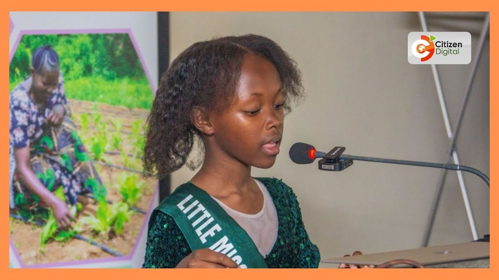

On air, on screen, in print.
TV interviews, newspaper features and podcasts from Kenya and around the world. It all starts with Alana’s own show.
Media kit
Alana’s own podcast
Climate Gumzo with Alana
“Welcome to Climate Gumzo with Alana, where we dive deep into the world of climate science, sustainability, and environmental action!”
On screen
Kenya’s national TV channels and a global climate channel. Press play to watch here.
 Play video
Meet climate advocate and author Alana Chelangat
Play video
Meet Alana Chelangat, young climate advocate
Play video
Meet climate advocate and author Alana Chelangat
Play video
Meet Alana Chelangat, young climate advocate
 Play video
Meet Alana Chelangat: young, bold and fighting for the planet
Play video
Meet Alana Chelangat: young, bold and fighting for the planet
 Watch
Interviewed in Dubai as an Environmental Ambassador from Kenya
Watch
Interviewed in Dubai as an Environmental Ambassador from Kenya

In print & online

National, page 3 · Tuesday 19 November 2024
Kenyan pupil amplifies children’s voice at COP29
“We showed them what hope looks like through our eyes. It’s different when leaders hear directly from kids.”
The StandardAlana Chelangat crowned Little Miss Environment Kenya 20252025
TNX AfricaAlana Chelangat crowned Little Miss Environment Kenya 20252025
Citizen DigitalCitizen DigitalFifth edition of Little Mister and Miss Environment Kenya held in Nairobi3 Mar 2025
Green WarriorsGreen Warriors TV · LinkedInEmpowering future stewards: meet Alana ChelangatFeature
UCCYOUTH CLIMATE JUSTICEUniversity College Cork, IrelandYoung Kenyan Climate Advocate Takes on COP295 Feb 2025
Guest podcasts & talks

Media kit
For event organisers, journalists and partners: bios, key facts, approved photos and booking details in one two-page PDF.
Alana Nicky Chelangat is a Kenyan climate justice advocate, author and podcaster. Founder of Dunia Endelevu and host of Climate Gumzo with Alana, she helps children understand climate change and act on it. She has spoken at COP28 and COP29 and was crowned Little Miss Environment Kenya 2025.
Alana Nicky Chelangat is a Kenyan student, climate justice advocate, author and podcaster who believes children belong at the centre of climate decisions. She founded Dunia Endelevu, a platform where children and young people learn about climate change and take action, and hosts Climate Gumzo with Alana, a podcast that turns big climate ideas into language young audiences understand. Her book, Alana’s Magical Adventure at Mazingira Park, opens the Climate Action Adventure Series.
Alana was a keynote speaker at COP28 in Dubai, spoke on a children’s rights panel at COP29 in Baku, and gave a keynote at the 3rd International Conference on Child Protection in Africa in Nairobi. She is a Young Advisor to University College Cork’s Youth Climate Justice project, a member of YOUTHTOPIA’s Circle of Youth, and Little Miss Environment Kenya 2025.
Alana Nicky Chelangat is a Kenyan climate justice advocate, author and podcaster. Founder of Dunia Endelevu and host of Climate Gumzo with Alana, she helps children understand climate change and act on it. She has spoken at COP28 and COP29 and was crowned Little Miss Environment Kenya 2025.


Bookings and interviews: alanachelangat@gmail.com. Every request is reviewed by Alana’s parent.